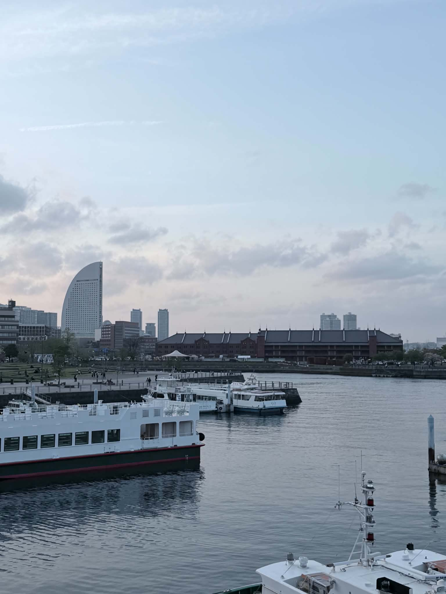
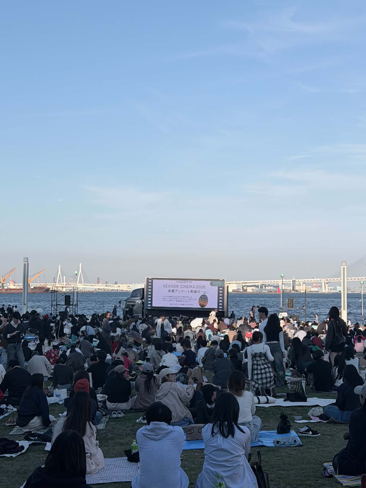

横浜の港で感じたこと
横浜を歩いていて印象に残ったのは、街の近くに海や港の景色があることです。 大きな船や広い空、海の近くで過ごす人たちの様子を見ると、 横浜が港町であることを強く感じました。
港で印象に残ったポイント
01 Large Ship
港で見た大きな船はとても迫力がありました。 近くで見ると、横浜港のスケールの大きさを感じました。
02 Harbor View
海、船、赤レンガ倉庫が一緒に見える景色は、 横浜らしい港町の雰囲気がありました。
03 Seaside Moment
海辺ではイベントも行われていて、多くの人がゆっくり過ごしていました。 明るく楽しい空気を感じました。
Photo Details
ここでは、横浜の港周辺で撮影した写真を紹介します。 大きな船、港の景色、海辺のイベントなど、 横浜の開放的な雰囲気が伝わる写真を選びました。
Large Ship
港で見た大きな船は、今回の旅行の中でも特に印象に残った景色の一つです。 船の大きさから、横浜が海と深く関係している街だと感じました。

Harbor and Red Brick
赤レンガ倉庫と港の景色は、横浜らしさを感じられる組み合わせでした。 歴史を感じる建物と海の風景が一緒に見えるところが魅力的でした。

Seaside Event
海辺では、多くの人が集まってイベントを楽しんでいました。 観光地としての横浜だけでなく、人が集まって時間を過ごす場所としての横浜も感じました。